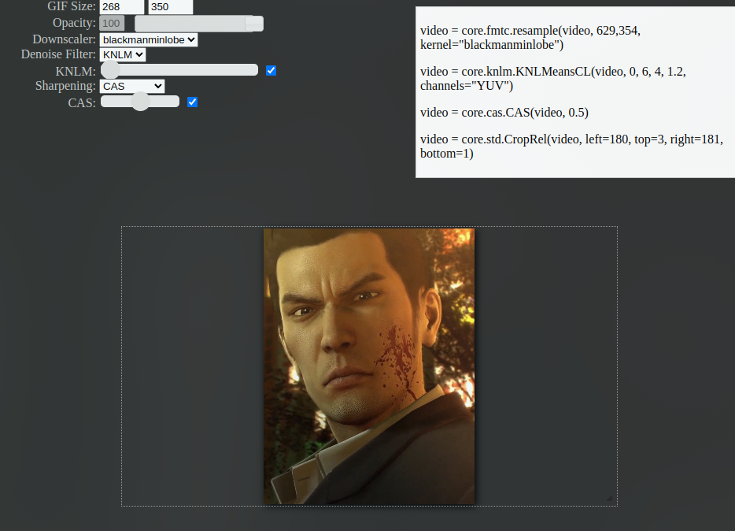
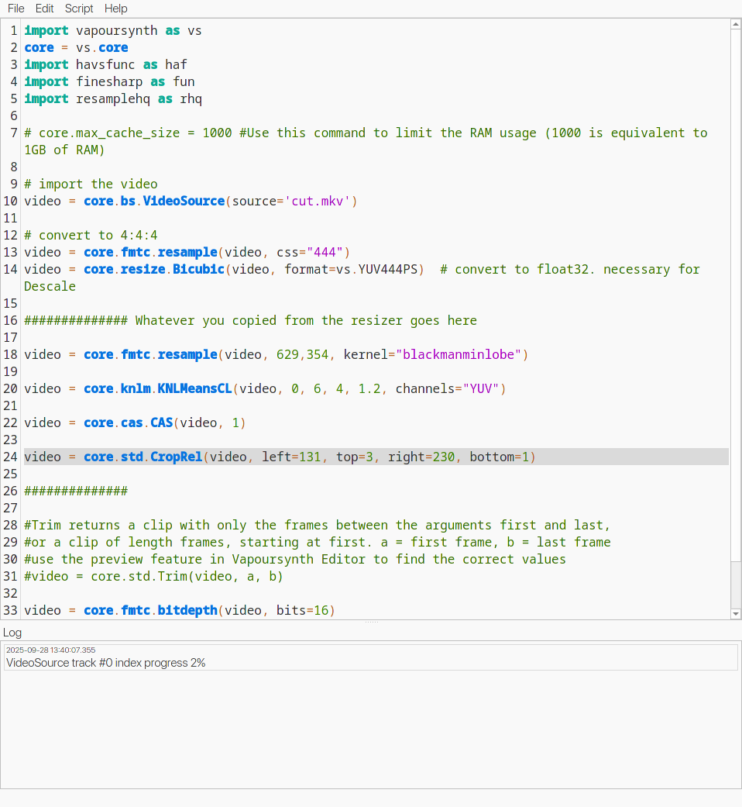
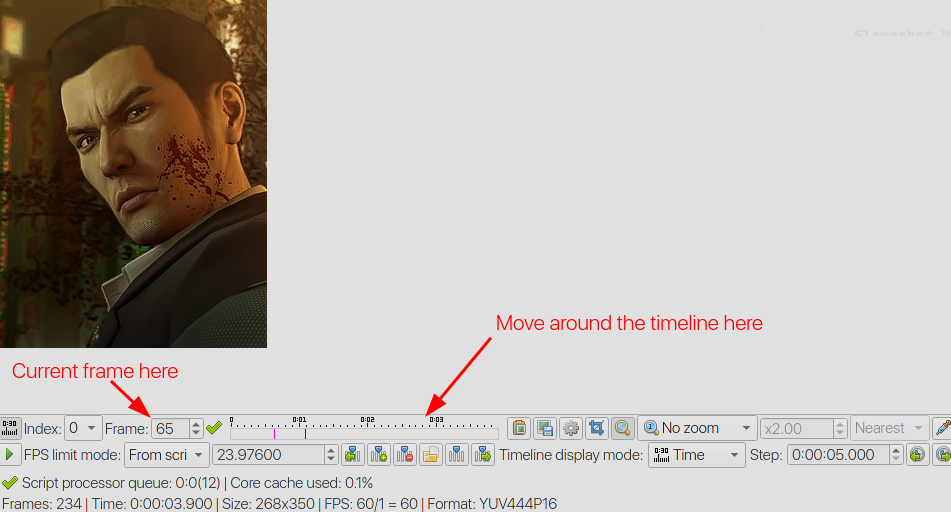

this is how i’ve adapted nibreon’s vapoursynth for gif-making tutorial to work on linux using a modern version of vapoursynth, particularly nobara 42, for the purpose of making animated images (gifs for tumblr and avifs for my site) from videos. probably works on fedora 42.
i haven’t adapted all the plugins that nibreon includes in their portable vapoursynth package, since i mainly use vapoursynth for its very nice downscaling capabilities. in addition, many plugins in that package rely on methods that have since been depreciated in modern vapoursynth releases. i have however made sure that KNLMeansCL denoising and CAS and FineSharp sharpening works, and should give you an idea on how to install other vapoursynth filters.
running vapoursynth should be the same on other distros, but installing vapoursynth and its plugins will differ. on arch, vapoursynth plugins can be installed from the AUR; on debian based distros, take a look at the multimedia repository for plugins. plugins can also be compiled yourself and put into ~/.config/vapoursynth/plugins. for more information on installing vapoursynth on linux, see the vapoursynth documentation.
software installation
installing vapoursynth and plugins
install vapoursynth
sudo dnf install vapoursynth vapoursynth-libs vapoursynth-devel python3-vapoursynthfor pre-compiled plugins, enable the AV RPM COPR repo.
sudo dnf copr enable flawlessmedia/av-rpm for the script i’ll be using, i’ll install the following plugins:
- BestSource to load the file
- fmtconv for resampling
- Descale for downscaling
- KNLMeansCL for denoising
- CAS for sharpening
- RemoveGrain which is necessary to run the FineSharp module
sudo dnf install vapoursynth-plugin-bestsource vapoursynth-plugin-knlmeanscl vapoursynth-plugin-descale vapoursynth-plugin-fmtconv vapoursynth-plugin-cas vapoursynth-plugin-removegrainand the following modules
- resamplehq.py for an alternate downscaling method
- finesharp.py for an alternate sharpening method
to use a module, download its .py file. for this setup i’m only using these two, but the method is the same for other modules (you will need to make sure that if the module has a dependency that you install it first however). now find out where python modules are stored:
python3 -c "import site; print(site.USER_SITE)"move the module to this location. assuming its ~/.local/lib/python3.x/site-packages/:
mv resamplehq.py ~/.local/lib/python3.13/site-packages
mv finesharp.py ~/.local/lib/python3.13/site-packagesinstalling vapoursynth editor
next we’ll install VapourSynth Editor, the IDE that lets us edit the script and preview how the filters will look before encoding our video. on linux this must be compiled from source. for information on how to compile, see the BUILDING file, which mentions the necessary packages for ubuntu.
i had a bit of a hard time figuring out which packages i needed to install on nobara to finally get it to compile, but i think the following is what worked for me in the end:
sudo dnf install gcc-c++ qt6-qtbase-devel qt6-qtwebsockets-devel qt6-qt5compat-develto build and install (assuming ~/.local/bin is part of your $PATH, this can be changed)
git clone https://github.com/YomikoR/VapourSynth-Editor
cd VapourSynth-Editor/pro
qmake6 -norecursive pro.pro CONFIG+=release
make
cp ../build/release-64bit-gcc/vsedit ~/.local/bin
cp ../build/release-64bit-gcc/vsedit-* ~/.local/binrunning vapoursynth
i’ve uploaded the necessary files modified from nibreon’s tutorial to a github repository. this setup assumes that vapoursynth is a folder inside of the Videos folder:
cd ~/Videos
git clone https://github.com/balfiere/vapoursynth.git
chmod +x vapoursynth/vapoursynthit includes three files:
- the bash script
vapoursynththat handles trimming a video to a given scene and starting the resizing tool and vapoursynth editor resizer.htmlthat gives an interactive way of scaling and cropping the video to a desired dimension, plus choosing some downscaling, denoising, and sharpening methodsscript.vpywhich is the vapoursynth script used to encode the video clip; options selected fromresizer.htmlare pasted here
the bash script
i have rewritten the .bat file as so:
#!/bin/bash
# move to script directory
cd "$(dirname "$0")"
echo "Start timestamp (e.g. 00:01:34): "
read timestamp
echo "Encoding duration (e.g. 00:00:05): "
read timestamp2
ffmpeg -y -ss $timestamp -t $timestamp2 -i ../$1 -vcodec libx264 -preset ultrafast -qp 0 cut.mkv
ffmpeg -y -ss $timestamp -t $timestamp2 -i ../$1 -vcodec libx264 -preset ultrafast -pix_fmt yuv420p cut_resizer.mp4
thorium-browser resizer.html &
vseditthere are a couple assumptions the script makes:
- the script takes a single argument, the name of the video file it will cut. this file is located in the folder above the script (aka the Video folder)
cut.mkvandcut_resizer.mp4will be outputted to the same folder the script is located in. in addition,resizer.htmlis also located in this folderthorium-browseris used to open the html page that will help us resize and crop our video. you can change this to whatever browser you use or simplyxdg-openif your system defaults to opening html files in a browser.- vapoursynth edit can be opened using
vsedit(aka you’ve put it in your $PATH)
cut.mkv is a lossless snippet of the video that we’ll be applying the vapoursynth script to. cut_resizer.mp4 is the same portion of the video, but encoded in such a way that it can be opened and previewed by resizer.html.
to run the script:
cd ~/Videos
vapoursynth/vapoursynth inputvideo.mkvwhen the script runs, it’ll ask for the time you want the clip to start and how long the clip should be. this can be slightly outside of the desired time frame, as we can select the precise start and end frames in vapoursynth editor later. now the resizing tool and vapoursynth editor should both open.
the resizer
the resizing tool used in this setup was made by brandinator. i’ve modified it very slightly to output the code following vapoursynth’s current syntax (ex. use core.descale.Debilinear instead of descale.Debilinear) and to use the downscaling/denoising/sharpening methods we previously installed.
when it opens, it looks like this:

the top left is where you can set the desired dimensions of your clip, as well as the downscaling method, the level of denoising, and sharpening method and level. note that the downscaling/denoising/sharpening methods won’t affect the preview here, but can be previewed at the next step. you can resize the video by dragging the bottom right corner of the video (framed by the white outline), and crop it at the desired place by clicking and dragging the video around.
once you’re done adjusting the settings, copy the output in the top right.
the vapoursynth script
when vapoursynth editor opens, it should look like this:

delete the stuff between ############## Whatever you copied from the resizer goes here and ############## and paste the code copied from resizer.html.
to see what the clip will look like with the chosen filters, click on “Script > Preview” or hit F5. if you want to tweak your settings, simply close the preview, edit the script, and open the preview again.
precise timeline trimming

on the bottom, there’s a timeline you can use to step through each frame in order to determine the the precise start and end frames. note down the start and end frames. then close the preview and go back to the script. then change the line#video = core.std.Trim(video, a, b)to your desired frames. for this clip, i’ve set it tovideo = core.std.Trim(video, 38, 271)
once your preview looks good, go to “Script > Encode video” or hit F8. i’ll be using the “mov” preset from nibreon’s original tutorial. next to “Preset”, give this preset whatever name you want. next to “Header”, select Y4M. next to “Executable”, type ffmpeg. in the “Arguments” box, add
-f yuv4mpegpipe -colorspace bt709 -i - -vcodec rawvideo -pix_fmt rgb24 -sws_flags full_chroma_int+accurate_rnd -y "{sd}/output.mov"then click on “Save” to save the preset. to start encoding, click on “Start” at the bottom. the encoded video output.mov will be inside the vapoursynth folder.
the final clip, comparing to ffmpeg
at this point output.mov is ready to be colored using photoshop, davinci resolve, etc or converted straight into gif/avif format.
here’s what my clip looks like scaled using ffmpeg (ffmpeg -y -i cut.mkv -f yuv4mpegpipe -vcodec rawvideo -vf "scale=629:354,crop=268:350:131:3,select=between(n\,38\,271),setpts=PTS-STARTPTS" test.mov):

here are three versions where it was first processed using vapoursynth:


while each setting gives the clip a different look, they all are noticeably clearer than without any vapoursynth processing at all.
more resources
- VapourSynth R72 documentation for how to install vapoursynth and plugins, and the basics of script writing
- l33tmeatwad - Software Setup has some more information on compiling vapoursynth editor and other tools. although it’s a bit outdated (vsedit now uses qt6) it might give some hints as to what packages are needed on other distros to compile vsedit
- Resampling for more information on different downscaling techniques
- Descaling and Rescaling - Advanced Encoding Guide for even more downscaling information